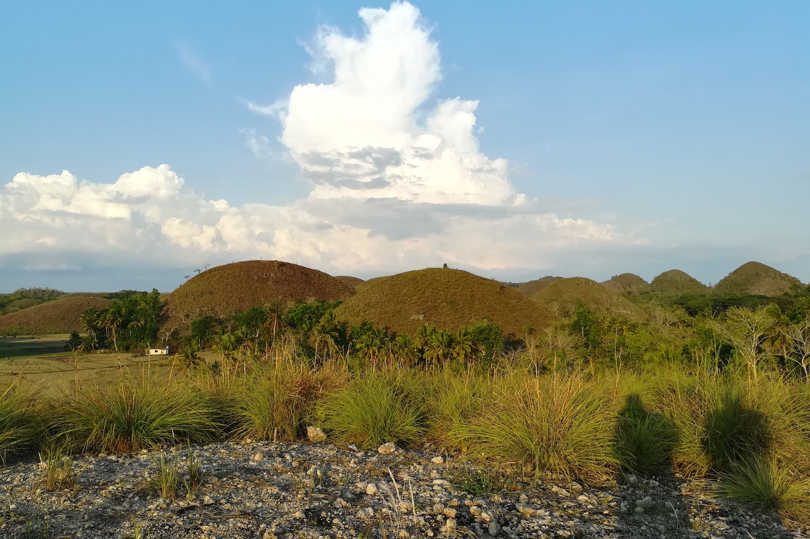
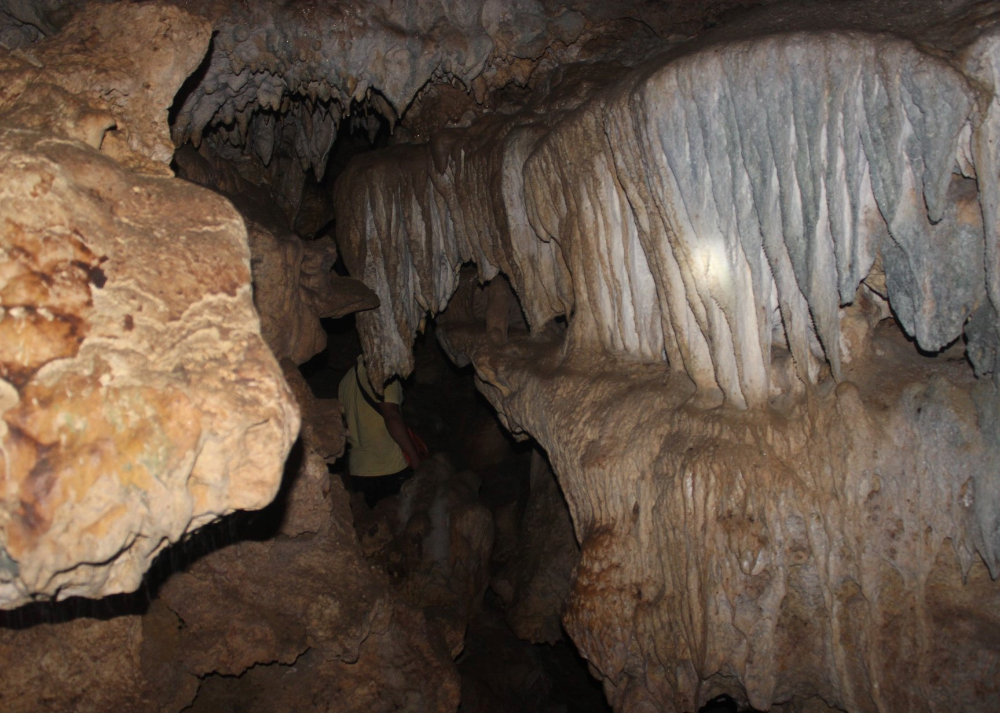
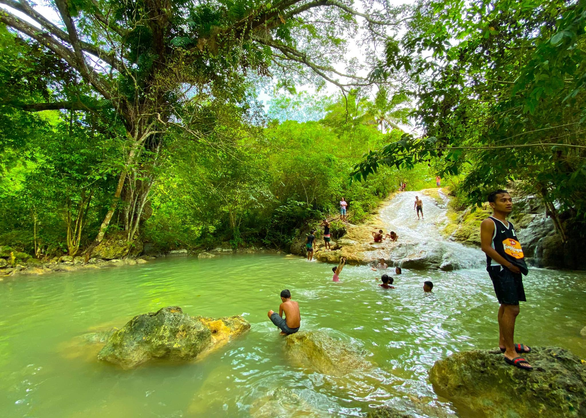
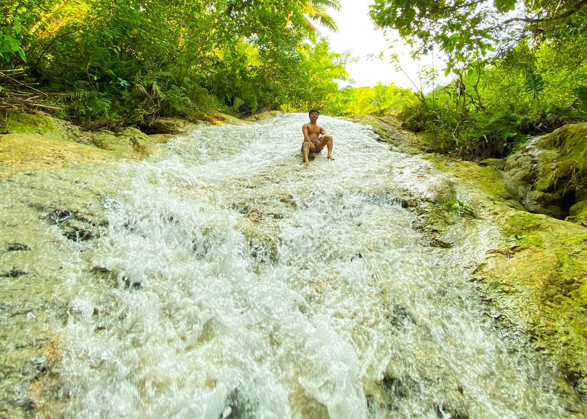
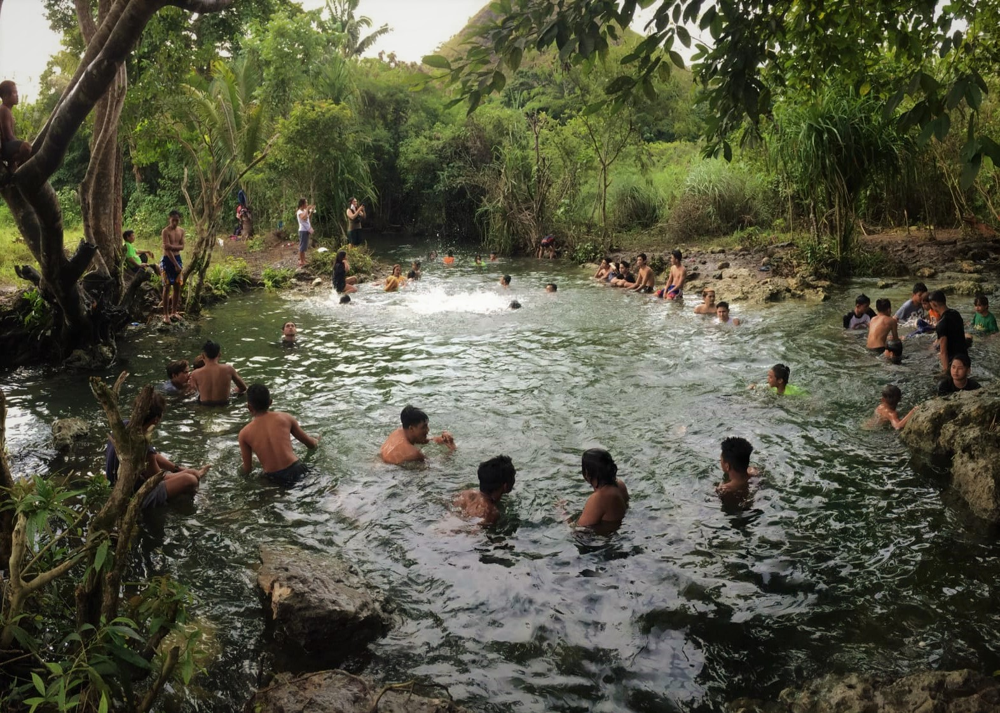
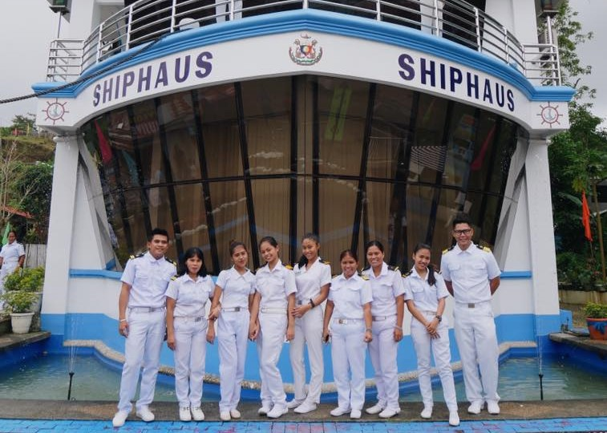

Makapiko Nature Park is a place for nature lovers and adventure seekers like trekking and river tubing activities.
Surrounded by lush vegetation and veiled with an enchanting atmosphere, Makapiko River is not only perfect for cooling down but also, it is an ideal place for pictorials.
Your water tubing experience starts in the Makapiko River Park where you will do a hike along the river to the place where the tubing begins. The tube trip is 45 minutes to one hour depending on the flow of the river. It’s a leisurely trip with several short, exciting rapids. This is a good trip to combine with other tours. All equipment is included.
Here's an image you can hear!
There are more than a thousand hills spread over an area of 50 square kilometers in the towns of Carmen, Batuan, and Sagbayan in Bohol. And, while the hills do vary in size, looking at these from afar, it seems like they’re almost symmetrical in shape. This results in a majestic landscape that might make you think it’s a man-made creation.

Get away from the crowds at the viewing platform and see the Chocolate Hills up close and personal!
The little town of Batuan has been dubbed as the Gateway to Chocolate Hills and it sure did live up to it's name. Before reaching the Chocolate Hills itself, the municipality offers sneak peaks of the scattered karst cones, hyping up the entire experience.
Hit the back roads of Barangay Aloja and you'll find the locally-famous Mt. Pung-as, one of the unique hills. You will get the opportunity to hike and witness Chocolate Hills at a brand new, equally magnificent perspective, when you do you will start to understand what a special place this is.
With the rise of a new source of livelihood in Batuan also came to be, a new tourist attraction.
Located along the border of Barangay Sta. Cruz and Garcia, the symmetrical placements of the palm trees, which makes it a unique and picturesque site, has attracted countless local and foreign tourists.
Not only did the plantation increased the livelihood of Batuan, it also increased the quality of tourism in the municipality.
Aside from pictorials, you can also enjoy the place just by strolling around it, letting the cool shade and fresh air bring you closer to nature.

This cave is just a 5 to 10 minute hike from the barangay road in Janlud. Of the several caves in Janlud, this one is the best!
You will see many stalactites and other interesting formations.
The cave is large but there are places where you have crouch down to get through to the next chamber.
Bats are abundant in this cave!
Wouldn't it be perfect after taking a dip in the river, you'll get a taste of something refreshing to maximize the experience? Located near the Makapiko River, the dragonfruit farm of Batuan has graced countless of tables in the island of Bohol.
Recognized as a crowd favorite, the red pittaya has been described as a slightly sweet cross between a kiwi and a pear.
Another dragonfruit variant is the Honolulu Queen or yellow pittaya known for it's vibrant yellow color and tastes as good as the red one.
The dragonfruit trees in the area bears fruits all year round which also shows the richness of the soil in Batuan.

Deep in the heart of the Aloja jungle lies Kansagipot Falls, a remote and quiet place perfect for quenching the hot summer day.

Recently discovered by the public, Kansagipot Falls has already captured the hearts and the eyes of many travelers.

Although the hike going to the falls itself is quite distant from the barangay proper, all the sweat and anticipation will be all worth it once you arrive at the place.
You can literally hear the call of nature begging you to take a dip and freshen up!

Located close to the barangay proper of Sta. Cruz is a natural pool called Buak Bato.

The place just recently opened to the public and it has been the locals' go to place to cool off.
The calm water and green surrounding instantly puts anyone at ease.
Next time you visit Batuan, drop by at Buak Bato and take a chill!
Located in Poblacion Norte, the Shiphaus is uniquely shaped like a shipping vessel, as the name suggests. It is a house owned by Capt Gaudencio Dumapias, a native of Batuan who became a successful mariner. The house was opened in late 2011 to local and foreign tourists to showcase the culture of Batuan. One can see the local weavers at work and buy their wares at the souvenir shop.
Inside the ShipHaus you will find captain’s cabin, chiefmate’s cabin, kitchen, mess hall and others. There is a roof deck that resembles the front of the ship from which you can imagine looking into the endless ocean while taking some refreshments.

The workers are all dressed in sailor's uniform.
Shiphaus also showcases their maritime simulation which gives their visitors the experience of being on an actual ship.
The church of St. James the Apostle in Batuan, constructed in the 1960s. The edifice exudes a Moorish character, mainly because of the ogee-shaped main entrance and windows on its facade and the similarly shaped domes on its belfries.
The newly finished dome painting inside St. James the Greater Parish church.
St. James the Greater Parish church during the town fiesta.
Batuan was recently chosen by the Pope himself as one of the Jubillee Pilgrim Churches to mark the 500 years of Christianity in the country.
Located in Pob. Norte, the Batuan-Hanopol-Balilihan route - now dubbed as the Road to Forever, is a seemingly endless stretch of road at a persons eye view.

This road once lead to Barangay Behind the Clouds where the Bohol Central Command HQ was established during WW2.
The place is undoubtedly picturesque attracting countless locals and tourists who wants to witness Batuan's iconic sunset.
Balay sa Humay in Pob. Sur, Batuan is one of the first 15 identified ecotour destinations in the province of Bohol by DOT and JICA.

In balay sa humay, you can experience the pounding of rice using mortar and pestle, winnowing of rice, planting and harvesting of rice.
The main purpose of Balay sa Humay is to increase appreciation of rice and its role in the natural and cultural history of Batuan by showcasing locally made rice products and allowing guests and visitors to experience local rice-culture activities. At the same time, it serves as the marketing end of the organic rice value chain. At present, it is the only locally based rice museum in the Philippines. It is confident in its potential to become a self-sufficient, revenue generating tourist destination.
Jolit’s Garden and Eco Farm, owned by couple Jomer Meletante Balag and Lita Ocho Balag in Barangay Cambacay Batuan sprouted from a 100 square meter farm testing in aquaculture on a sandy clay soil characteristic of the area.
Jomer has a wide variety of plants and animals. You will see his stingless bees, an important pollinator of food crops, fresh-water lobster, a local delicacy, ornamental fish for ponds and aquariums and Asian box turtles which feed on mosquito larvae.
He grows a wide variety of ornamental plants as well as herbs and vegetables. If it grows on Bohol the chances are that Jomer knows how to grow it!
Here's a picture of a frogmouth owl chick he has rescued.